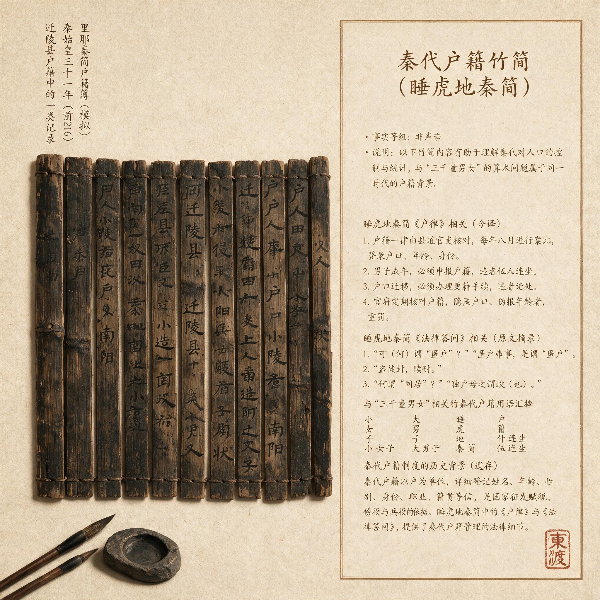

第 4 章
三千童男女的算术
这份征调令从即墨县廷发下时，简上的字迹已经经过两次誊抄。最上面一片简的背面残留着一小片封泥，泥上压着县丞的印，印文已漫漶，只剩半边“丞”字尚可辨认。正文从右向左铺开，写的是每里应出童男若干、童女若干，年龄在十岁以上、十五岁以下，由县廷统一编册，送至琅琊——那个即将把木头、风浪和结构失效的确定性打包成例行差事的地方——备入海求仙之用。
这不是修驰道、筑长城、戍五岭时常见的那类丁壮调拨文书。丁壮征发在秦律中有明确的服役年限、轮次和免役条件，而这一份要的不是成丁，是未成年人。琅琊台上的刻石纪功发生在秦始皇二十八年。此前一年，帝国刚在东南方向完成对百越的初步用兵；此后一年，始皇帝将再次东巡。这道征调令下到即墨县各里时，距离琅琊刻石不过几年光景。
里正把竹简摊在案上，油灯的光照出“童男”“童女”四个字反复出现，像一串被反复敲打的印痕。他在里中做了十一年里正，见过修驰道的征调令，见过筑琅琊台的名册，见过北边长城的戍卒调拨文书，但从未见过这样的东西：要人。不是丁壮，不是更卒，不是刑徒，是未成年的孩子。
他把竹简重新卷到开头，一个字一个字往下认。里正的识字量有限，秦篆在他眼里并不总是顺畅，但这卷文书的内容不需要很高的识字水平也能读懂大意：每里出童男若干、童女若干，年龄在十岁以上、十五岁以下，由县廷统一编册，送至琅琊，备入海求仙之用。文书末尾加盖了县丞的印，印泥是鲜红的，在烛火下泛着暗光。
他放下竹简，听见屋外有风声。那是从海的方向吹过来的风，穿过即墨县城外的麦田，穿过里门前的槐树，灌进这间低矮的屋舍。海离这里不远，往东走不到三十里就是海岸，站在高处能看见那片灰色的水面。但他从未想过，那片海有一天会伸进他的里中，从户籍册上抓走孩子。
这不是一道普通的徭役令。徭役征丁壮，是计入每户赋役义务的，有章可循，有律可依。成丁每年服徭役的天数、更替的轮次、免役的条件，秦律都写得清清楚楚。
但孩子不在这套制度里。秦制以成年丁壮为统计核心。户籍册上，每户的人口按“大”“小”“使”“未使”分类登记：“大”是成年男女，是纳税和服役的主体；“小”是未成年人；
“使”和“未使”是更细致的劳动能力划分，指能从事辅助劳动和完全不能劳动的幼童。这套分类体系的设计目的很明确：核算每一户能提供多少赋税和劳动力。未成年人被记入户籍，是因为他们会长大，会成为未来的纳税人，他们的存在影响一户未来的负担能力，因此在登记田宅、分配土地时需要纳入考量。但他们本身不是国家征调的直接对象。秦律没有规定如何征发未成年人服役，因为这种事原本不该发生。
但这份文书正要求做这件事。里正重新铺开竹简，开始核对里中的户籍册。那是一卷更旧的竹简，边缘已经磨损，绳编断过两次，他亲手重新编联过。每一片简对应一户，记录着户主姓名、妻、子、女的年龄和性别，以及奴婢、田宅、牲畜的数量。
他的手指划过一行行字迹，嘴唇微微翕动。里中共五十三户，这是去年更籍时的数字。五十三户中，符合十岁到十五岁这个区间的孩子有多少？他一个一个往下数。第三户，户主名“衰”，简上记有成年男子一名、未成年男子一名、未成年女子一名。
大的那个是成丁，已经在去年修驰道的役中；小的那个，简上没有具体年龄，只注明“小”——那意思是在劳动能力分类中尚未达到“使”的标准，也就是还不能承担辅助性劳动。但“小”这个标签涵盖的年龄跨度很大：从不需要哺乳的幼儿一直到十几岁的少年，都可能被归入这个类别。它的划分依据是劳动能力，不是准确年龄。要确认这个孩子是否符合十岁到十五岁的条件，需要另外查证。
他继续往下数。第七户有个未成年的女孩，第十二户有两个——兄弟二人，一个“使”，一个“未使”。“使”的意思是已经可以承担辅助性劳动，秦律对“使”的年龄没有统一规定，一般学者根据多种秦简材料推测在七岁到十岁之间，但各地执行标准不一，甚至同一里中不同户的记录方式也有差异。
这些记录当初只是为了估算每户劳动力的成长前景而设，从未被设想用来作为征调的精确依据。现在，一份要求精确到年龄和性别的征调令摆在面前，那些模糊的分类突然变成了需要被严格定义的边界。里正花了大半夜，数完第一遍。
在琅琊台的海风中，秦始皇二十八年（公元前219年）的那次上书，在官方叙事中只留下简短的记录。《史记·秦始皇本纪》在描述那一年的事件时，写道：齐人徐巿等上书，言海中有三神山，仙人居之。请得斋戒，与童男女求之。寥寥数语，司马迁没有写徐福具体要求多少孩子，没有写征发如何实施。记录只到这一步。
在《封禅书》和《淮南衡山列传》中，这个数字变得具象起来。《淮南衡山列传》借伍被之口描述了徐福带走的规模：童男女三千人。这是“三千”这个数字在《史记》中一次有力的出现。而在东汉班固的《汉书·蒯伍江息夫传》中，这一描述被复述为“多赍珍宝，童男女三千人，五种百工而行”，与《史记》大体相同。
这三次上书——公元前219年的初次上书、公元前210年的再次请求、以及《淮南衡山列传》中伍被转述的海神索要童男女的故事——在时间和细节上构成了一个模糊的轮廓。陛下之后的岁月里，这个轮廓被不断描摹：五代后周僧人义楚从来华日僧宽辅处听闻，秦时徐福将“五百童男、五百童女”带到日本，其子孙皆曰“秦氏”；到了江户时代的《日本国史略》，这个数字又稳定地回到了“童男童女三千人”。数字在流传中增殖、稳定或漂移，但那个前往“平原广泽”（《史记》语）不再返回的行动，始终是叙事的核心。
三千人如果分三次带走，每次约一千人；如果后两次只是补充第一次的损失和调整，那么首次带走的数量可能更大。
这一数字不仅仅是后世传说的情感核心，它本身就是一个制度密码。在秦代的人口基数、户籍制度和行政能力条件下，要征调三千名童男童女，这件事的难度和规模意味着它不可能是一个人的骗局——没有任何个人有能力伪造这样规模的征调令，也没有任何郡县会在没有朝廷授权的情况下放走如此数量的未成年人口。它只能是通过国家机器下达的、有案可稽的制度行为。
而这恰恰是问题所在。秦帝国的人口管理建立在精确到户的户籍制度之上。睡虎地秦简和里耶秦简中保存了大量户籍文书和徭役征发记录，让我们得以了解这套制度如何运作。每里每年要更籍一次，每户的人口变动——出生、死亡、分家、逃亡——都要据实上报。郡县汇总各县的数据，县汇总各里的数据，层层上报，最终汇入咸阳的柱下史档案之中。这套制度在管理成年丁壮时惊人地高效。
修驰道、筑长城、戍五岭，每一次大规模征发都依赖这套体系进行人力调配。里耶秦简中的徭役记录显示，县廷可以精确到日地追踪每一个成丁的服役天数，以及他所在的更次轮换时间。
但孩子不在这套体系的精确掌控之中。秦简中关于未成年人年龄的记录方式，按照劳动能力划分为“大”“小”“使”“未使”几类基本分类。这种模糊性在日常的赋役管理中不是问题。每户缴纳算赋——人头税的一部分——时，以“大”者为纳税单位，“小”者免征；每户分摊徭役时，只看成丁数量。一个孩子的准确年龄并不影响税收和劳役的计算，因此没有人觉得有必要在户籍上精确记录。
当征发令要求十岁以上、十五岁以下这个具体的年龄区间时，基层官吏面对的是一个制度性的信息真空：户籍册上写的是“小”或“使”，没有月日，没有具体年龄，他们需要逐户逐人地重新核实。而这个核实的成本，远远超出一份普通征调令的执行逻辑。
以秦代齐地的郡县设置为框架，学者估算当时齐地——包括即墨、黄县、腄县、琅琊、东莱等沿海各县——的总户数约在数万户之间。具体到即墨一县，在秦统一后经过人口损失和恢复，辖下户数大约在两三千户。按每户平均五到六口人计算，即墨县的总人口约在一万五千人上下。在这个人口基数中，十岁到十五岁的未成年人占比，依据同类农业社会的历史人口模型推算，大约在百分之八到十二之间，即全县该年龄段的孩子合计约一千两百人到一千八百人左右。男女人数大致相当，各占一半，也就是各有六百到九百人。
如果齐地承担了“三千童男女”的主要征调任务——这是合理的假设，因为这个数字与出海求仙的主题绑定，而齐地是方士文化的核心区域，也是徐福活动的主要范围——那么分摊到各县的任务量会相当沉重。三千人中，童男一千五百人，童女一千五百人。齐地沿海数县加上邻近的内陆郡县，共计分摊，位于沿海的即墨、黄县、琅琊等县由于接近出海地点，很可能承担更重的分摊比例。
即便乐观地假设征发范围扩大到整个齐地沿海郡县，即墨一县也至少要出上百名孩子，或者更多。如果征发只集中在少数几个沿海县，每县的分摊量会成倍增长。这意味着，在即墨县辗转到里正手中的那份文书，可能要求每个里出数个到十数个的孩子。而里正已经算过，他所在里的五十三户人家中，符合模糊年龄条件的孩子加起来，很可能刚够甚至不够这个数字。也就是说，几乎每一户有这个年龄段孩子的家庭，都会被波及。
这个计算本身就是一种暴力。它把人口从家庭中剥离出来，变成一组可加减的数字，然后在一张竹简上完成调配。但数字落到地面上，每一笔都是活生生的代价。
一户典型的五口之家，在秦代齐地的乡村中，其构成大致如此：户主——一个成年男子，年纪在三十到五十岁之间，是家庭的主要劳动力；他的妻子，年纪相仿；他们的父母中可能有一人还在世——秦代人的平均寿命较短，祖父母辈往往不全；然后是一到两个孩子。
如果这是一个有三个孩子的家庭，通常至少有一个已经成丁或接近成丁，成为家庭劳力的重要补充；年幼的孩子则从事辅助劳动，“使”的孩子可能帮忙放牧、捡柴、照顾更小的弟妹。
失去一个十岁到十五岁的孩子，对这个家庭意味着什么？在这个年龄段，一个男孩已经可以参与田间辅助劳动。他可以跟在父亲身后播种、除草、收割，可以独立放牧牲畜，可以在农忙时节承担从田间到场院运输作物的任务。春耕时他能扶犁走上一段，秋收时他能背得动半筐谷穗。在秦代自耕农的经济核算中，这样一个半劳动力的产出，大致相当于成丁的三到四成。
他要消耗粮食，但也产出粮食；他要占用衣物，但已经不需要像幼童那样有人全天看护。从经济账上看，他正处在一个微妙的转折点上：往年的投入即将转化为净产出，这个家庭正在从他身上收回抚养成本，并开始获得劳动力盈余。一个十岁到十五岁的女孩，她的劳动贡献模式不同，但同样不可或缺。
她在母亲身边学习纺绩、织布、缝补，这些技能在几年后将成为她出嫁时的重要依凭，也将成为她未来家庭的生计支柱。同时，她承担着照顾更年幼弟妹的责任——一个家庭若有三个以上的孩子，母亲一人无法同时照看，姐姐就充当了半个母亲的角色。她还要参与采集、打草、养蚕等辅助性劳动。在一些贫困家庭，这个年龄的女孩已经开始承担部分炊爨之责，她的存在解放了母亲的劳动力，使母亲能够投入更多的田间劳动或其他家庭生产活动。
这种劳动力依赖在寡妇或鳏夫家庭中更加严重。秦简中保存了一些特殊户籍记录，包括“寡”——寡妇作为户主的情形。在这样的家庭中，成年劳动力本就不足，一个能从事辅助劳动的孩子，往往是维持家庭生计的关键。如果抽走这个孩子，意味着全家劳动力链条的断裂：老人没人照顾，幼童没人看管，剩下的成年劳力被迫分散精力去填补这些缺口，整体生产效率急剧下降。
除了劳动力损失，更根本的是家庭伦理层面的断裂。秦制以法律形式规定了家庭成员的义务关系，也以律令维护父权。
但法律的规定是一回事，父母的感情是另一回事。在秦代，孩子不完全是父母的“私产”——他们是国家的人口储备，是被计入赋役体系的未来纳税人——但他们在家庭内部的关系中，依然是父母养育多年、寄予期望的血脉。战国以来数百年的兼并战争已经消耗了难以计数的生命，每一个侥幸活到成年的孩子，都是家庭在疾病、饥饿、战乱中反复筛选后留下的幸存者。在这个死亡率高企的时代，一个孩子从出生到十岁，他已经跨过了最危险的幼年期，他已经学会了走路、说话、干活，他已经可以被看作这个家庭未来的确定一员。他与父母之间形成的感情纽带，不是一纸户籍所能概括的。
齐地是一个宗族文化深厚的区域。战国时期齐国的社会结构中，宗族和乡里关系占据重要位置，家族内部的互助网络远远强于秦本土关中地区直接面对国家权力的单个核心家庭模式。在这种社会生态中，孩子不仅是家庭劳动力，也是宗族延续的载体。一个家庭如果失去孩子，其在整个宗族网络中的位置会受到长期影响。
这种影响不是当年赋税账册上能看出来的，但它会逐渐侵蚀家庭与基层行政之间的信任基础。当里正的文书传到每一户时，这些计算不会以如此清晰的方式呈现在任何人的意识中。不会有一个父亲拿出算筹来演算儿子一年的劳动产出。
但他知道，来年春耕的时候，那个能帮他扶犁的人将不在了。不像成丁服徭役，服完役期会回来——在他的生活经验中，徭役是暂时的，修完驰道、筑完城墙，人就返回田里，继续耕作。
但“入海求仙”意味着什么？这个词组在他的认知体系中没有对应物。海是什么？他见过海，知道那是一片望不到边的水面，知道有渔船可以在近岸捕鱼，但也听说过很多出海的人没有回来。把孩子送到一个不知道能不能回来的地方，这与平常的徭役不在同一个逻辑范畴之内。
这就是秦帝国将人口资源化推向海洋时遭遇的第一重断裂：土地上的征发，无论多么严苛，都在一个可以理解和预期的框架内运行；从关中到齐地，从北边到岭南，郡县制的人口调配有一个根本特征——人口在帝国内部移动，最终仍被纳入户籍体系。
修长城的戍卒，期满后回原籍或就地落户，依然是国家编户；南征的士卒，战后屯戍岭南，开辟新的郡县，户籍随之迁移。土地上的资源调配，无论距离多远，最终都能实现人口的国家所有与家庭的生产单位之间的再平衡。
但入海是另一回事。户籍制度的基础是土地。人附着于土地之上，田宅的登记与人口的登记互为参照，这使得人口可以被追踪、被核算、被调配。一旦人离开土地、进入海洋，这套追踪体系就失效了。出海的人没有新的落脚点可以登记，没有新的田宅可以被编入档案。他们在制度意义上“消失”了——不是死亡，死亡会在户籍上注销并注明原因；
而是被永久移出国家的视野和控制范围。这构成了一个独特的行政操作：户籍注销。在孩子登船的那一刻，他的名字从里中的户籍册上被划掉，从县廷的汇总册上被删除，从郡府的档案中永久移除。不是“死”，是“去而不返”。国家永远失去了对这部分人口的支配权。如果三千人被分三次带走，这种注销会发生三次。每一次都有一批名字从帝国的人口账本上消失。
在咸阳，柱下史们可能根本注意不到这个微小的变化。帝国的人口以千万计，三千人不过是沧海一粟。但在地面上，在即墨、黄县、琅琊的每一个里中，每一个名字的注销都是一个具体的、“不可回收”的伤口。里正必须亲手在户籍简上刻下这一笔。那些被他抱过的孩子，那些他见过在田间奔跑的孩子，名字就这样被删除。明年更籍的时候，这些名字不再出现，而新的孩子还没有长大到这个年龄——里中的人口结构就此出现一个断层。
但这个数字在《史记》中只出现了一次。其语境在《秦始皇本纪》和《淮南衡山列传》中有所不同：《本纪》记载了秦始皇二十八年徐福上书，二十九年再次东巡，三十七年最后一次会面，都没有明确记录带走的具体人数，说明司马迁的叙事中这个数字不构成官方档案的直接内容；而《淮南衡山列传》借伍被之口追溯此事，完整说出了童男女三千人这一数字，并说徐福最终到达一处平原广泽、留在当地不再返回，这意味着数字是作为传闻和追述出现的，司马迁用“三千”这个整饬之数本身带有叙事概括的色彩。
它可能来自档案中累计征发数目的合算，也可能来自口耳相传中的化约：人们记不住精确的数额，只记住了一个大致的、有冲击力的整数字。细节的缺失和数字的约略，恰恰反映出这次征调在行政体系中留下的痕迹并不存在于中央档案的精确数字里，而是分散在各郡县的分摊册中，在每一个里正反复核算的账目里，在一户一户人家的离散和抵抗之中。
征发的过程因此不会是一次整齐划一的“招募”，而是一个漫长、反复、充满冲突的过程，从层层传递下来的模糊年龄要求与实际核对之间的差距开始，随后是家庭层面的抵抗，随后是逃亡。文书在里中传阅的第三天，有人开始收拾东西。起初是细微的征兆。一个妇人去邻县娘家，带走了本来不该带的女儿；
一户人家把儿子送到远处山中的亲戚家，对外说是去学手艺；还有一户，夜间听见门响，第二天孩子就不见了，户主来了，说是孩子自己跑的，他也不知道去了哪里。里正把这些事一一记在心里，但没有立即上报。他知道，一旦上报，县里会派人下来追查，事情会变得更大。
但他也知道，如果不上报，等到县廷核对应征名册与实际送达人数时，差额会追到他头上。秦律对逃亡有严厉的惩罚，连坐制度使邻里之间互相负有监督和举报的义务。
但在征童男女的问题上，连坐机制出现了松动。以往追捕逃役的成丁，邻里的举报意愿相对较高——逃役的成丁如果逃亡成功，他家的赋役负担会转嫁给同里的其他户。这是切身的利益冲突。但孩子不一样：各户都有或害怕被抽中孩子，在这种情况下，谁家藏匿一个逃亡的孩子，不是一种利益背叛，而是一种模糊的共谋。
邻里之间在沉默中达成一种默契：不问、不说、不报。这种默契没有明确的语言表达，它是一种在共同困境中生长出来的乡土伦理，与秦律的连坐条款悄然对抗。即墨县在征发过程中面临的行政成本成倍增加。正常的徭役征发，按户籍册上已有的记录分配名额，各乡镇、各里按期送交，县廷集中后向上转运。整个过程有一套成熟的公文流转体系。
但征童男女需要重新核实每个孩子的准确年龄和性别，基层官吏需要逐户走访询问——这本身就是一项巨大的工作量。一些家庭在核实环节中会故意隐瞒或谎报孩子的年龄，出生年的记忆原本就不精确，这让核实工作变得更加困难。县廷收到了各里报上来的应征名册，很快发现数字对不上。按照分配下去的名额，应该能征齐；
但各里实际报上来的名单，要么人数不够，要么注明了“逃亡”“病故”“年龄不符”等说明。县丞派人下去核查，核查的官吏在各里之间往返，耗费时日。公文在县廷与各里之间往返，每一次往返都产生新的文书，新的文书又带来新的争议和推诿。随着时间的推移，整个征发进程被拖慢。公文的拖延进一步加剧了家庭的焦虑。
起初只是风声，后来风声变成了必须面对的现实。一个家庭在接到确切通知后，通常只剩几天的时间做决定——接受还是抵抗。接受意味着与孩子告别，意味着亲眼看着孩子被带走，走向一个不可知的结局；抵抗意味着全家面临秦律的惩罚，意味着可能丢掉田宅、沦为刑徒或者被迫逃亡。
从家庭内部商议的角度看，这是一个无法做出“正确”决定的困境。户主——通常是父亲或祖父——需要权衡两方面的压力。一方面是对国家权力的恐惧：秦律的严苛是无人不知的，违抗征调令的后果可能祸及全家；
另一方面是对孩子的感情和对家庭未来的计算：失去了这个孩子，家庭在今后数年甚至十几年的劳动力和婚姻网络都会受创。与成丁的徭役不同，失去童男童女没有明确的“归期”——他们不是去修六个月的路，他们是要出海，而关于出海之后的一切，官方文书没有任何说明。在这种没有确定性的情境中，人们的选择逐渐分化。
一些家庭在权衡之后选择了服从，他们把孩子的衣物打成包裹，送孩子到里门外的集合点。有一些家庭拖延到最后一刻，希望在拖延中等到政策的改变或征发的撤销——这种情况在正常的徭役征发中时有发生，秦始皇三十年后许多大型工程放缓，一些已下达的征调令曾被收回。但更多家庭选择了第三种方式：逃跑。在即墨沿海地带，逃跑的方向很明确：往东，往海边。
海边有许多渔村和偏僻的港湾，那里人口流动频繁，户籍管理相对松散。渔民们本来就在近海岛屿和海岸之间来回移动，不属于典型的“附土”编户。把孩子送到那里，隐入渔村，或者干脆乘船到某个近岸的岛上躲藏，是齐地沿海居民应对征发的传统方式。
这种逃亡路径早在战国时期就已经成形，秦统一后并未完全封堵。沿海地区的基层行政能力受到地形和人口流动性的双重限制，在这些地区，秦制对人口的绝对控制出现了薄弱地带。每一批逃亡都意味着应征名册上的缺口又被撕大了一分。
县廷不断收到各里上报的逃亡记录，这些记录按照秦律的标准格式书写：某里某户、逃亡者姓名、年龄、性别、逃亡时间、可能的去向。这些文书在县廷堆积起来，形成一叠厚厚的案卷。县丞面对这些案卷时，必须在两种压力之间寻找平衡：完成征调任务的指令与逃亡造成的实际缺口，这两者之间的矛盾无法通过正常的行政手段解决。替代，因此成了一种被默许的变通方式。
一些家庭交不出自己的孩子，转而用其他方式填补：富裕的家庭用奴婢顶替——秦律允许奴婢作为财产被转让，而奴婢的户籍附属于主家，在注销时不进入国家的人口统计，这对县廷来说是一个干净的解决方案；贫困的家庭没有奴婢，只能在宗族内部寻找替代者，或者用其他手段搪塞。
奴婢顶替进入名册后，征发名册的原始含义——童男童女作为求仙的“洁净”载体——在实际执行中被彻底异化了。没有人真正知道入海求仙为什么需要童男童女，《史记》中徐福的说法是海神索要，但海神为什么一定要童男童女，没有任何解释。
这种模糊性使征发名册变成了一个只管填满数字、不问实际构成的空洞任务指标。在这种执行变形中，“三千童男女”逐渐从一个具体的年龄和性别要求，异化为一组只要人数对得上就可以交差的数目字。各郡县在层层公文流转中推诿名额——甲县说自己人口基数不足，要求乙县多分摊；沿海县说自己已经承担了大部分，内陆县应该分担更多；各县之间为分摊比例反复争执，文书往来不绝。

这种内耗导致征发的实际进度远远落后于最初的计划。一个统一的、在短期内完成全部征发的设想，在基层执行中被分解成了一连串拖延、替代、逃亡和推诿的碎片。夜色中，即墨县的一个里中，一户人家熄了灯火。没有发生过激烈的争吵。男人和妻子在白天的田埂上说了几句话，声音压得很低。晚上回家，老人已经把孩子的东西塞进一个包袱里。
他们没有跟邻居告别。里门在夜间应该是关闭的，但今晚没有人值守——里正或许知道，或许不知道，总之里门的木闩被人从里面轻轻拉开了。两个孩子，一个十一岁的男孩，一个十三岁的女孩，跟在父母身后，贴着墙根走出里门。他们穿过麦田，麦子已经收割，田野里只剩下一片碴口。
东边的天空没有月亮，隐约可以听见海浪的声音。他们往海边走去。去哪里，没有人知道。也许是往南去琅琊方向，那里有渔村可以投靠；也许是往东直接到海边，找一艘愿意搭载的渔船。大海在夜色中看不见，但它的存在无处不在——在风的方向里，在空气中的咸腥味里，在越来越潮湿的脚下泥土里。
这片海洋即将吞没一批又一批从此处征发的孩子，而这户人家的选择，不过是这场漫长征调中无数个被撕开的家庭伤口中的一个。次日清晨，里正重新整理户籍册，发现一户的记载需要更新。他拿起刀笔，在简的侧面刻下一行小字。
按照秦简文书制度，逃亡者的名字通常不会被立即彻底删除——这样做容易造成户内人口统计的混乱——而是先在旁注中标明“亡”字，等实和上报。他刻下那个字，简面上留下一道新的刻痕。然后他重新编联竹简，合上户籍册，放在案角。那卷从县廷发下来的征调令还摊在桌案上。
墨迹已经部分褪色，简的边缘因为反复翻动而起了毛边。他看了一眼，没有卷起来。因为他知道，还会有第二道文书，第三道文书，直到名册上的数字被勉强填满，或被另一种力量彻底放弃。在那个时刻到来之前，这些刻痕——记录着逃亡、注销和永远无法抹平的缺口的刻痕——将继续在每一个里中的户籍册上累积下去。它们不会被写进任何一部传世史书，但它们是那“三千”这个数字下面真正的纹路。